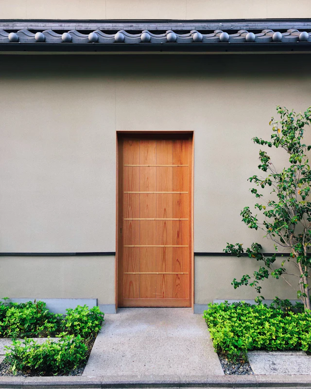
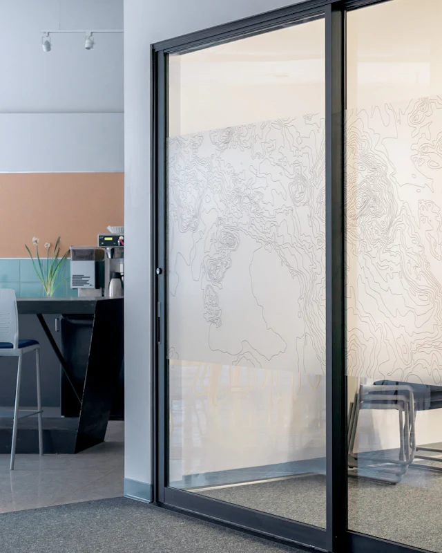
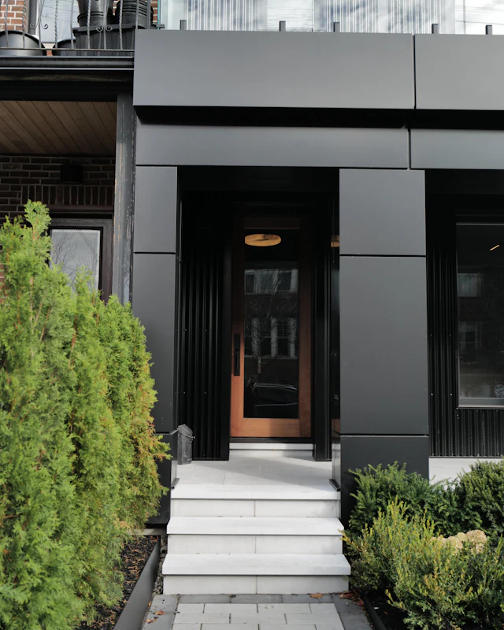
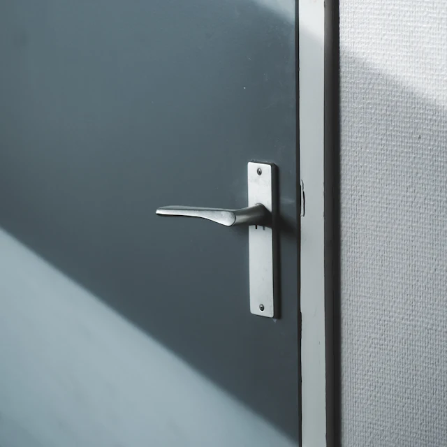

Lauko durys · Mediena arba aliuminis
Porta [DEMO]
Šiltos lauko durys su daugiataške spyna. Paviršius – lygus, frezuotas arba su stiklo intarpu.
- Varčios storis
- 78 mm
- Spyna
- daugiataškė, 3 sklendės
- Šilumos perdavimas Ud
- nuo 0,9 W/(m²K)
Lauko, terasos ir balkono durys, suderintos su langais: tas pats profilis, spalva ir furnitūra. Durų kainą skaičiuojame po matavimo [DEMO].

Lauko durys · Mediena arba aliuminis
Šiltos lauko durys su daugiataške spyna. Paviršius – lygus, frezuotas arba su stiklo intarpu.

Slankiojamos terasos durys · Aliuminis
Pakeliamos-stumdomos durys į terasą ar sodą. Žemas slenkstis, didelės stiklo plokštumos.

Balkono durys · PVC arba aliuminis
Balkono ir terasos durys, suderintos su langais: tas pats profilis, spalva ir furnitūra.

Rankenas, spynas ir spalvas parenkame kartu su langais, kad fasadas atrodytų vientisai. Pavyzdžius galite apžiūrėti salone [DEMO].
Užsakyti matavimą